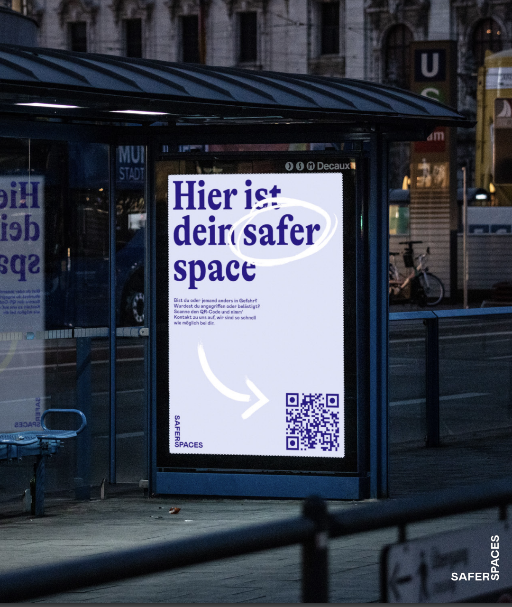

0
Kommunale Partner
0
Stadtfeste & Veranstaltungen
0
Sprachen verfügbar
0
DSGVO-konform
Proof of Concept
Seit 2023 ist saferspaces fester Bestandteil des Awareness-Konzepts der Kieler Woche – dem weltweit größten Segelevent mit bis zu 3,8 Millionen Besucher:innen. QR-Codes auf Plakaten, Bannern und Screens ermöglichen niedrigschwellige Meldewege über das gesamte Veranstaltungsgelände.
Case Study lesen →„Die Kooperation von saferspaces und der Landeshauptstadt Kiel ermöglicht ein sichereres Feiern und den demokratischen Zusammenhalt auf der Kieler Woche.“

Vanessa-Zoe Vitulskis
Referatsleiterin Stadtordnungsdienst, Kiel
Herausforderungen
Stadtfeste, öffentliche Plätze, Innenstädte – überall dort, wo viele Menschen zusammenkommen, braucht es Meldestrukturen, die tatsächlich genutzt werden.
Stadtfeste, Weihnachtsmärkte und Open-Air-Veranstaltungen brauchen Sicherheitsinfrastruktur, die in Minuten steht und nach dem Event wieder verschwindet. Klassische Meldewege sind zu langsam.
Awareness-Teams können nicht überall gleichzeitig sein. Auf Veranstaltungsflächen mit zehntausenden Besucher:innen fehlen skalierbare Meldewege, die ohne zusätzliches Personal funktionieren.
Im öffentlichen Raum eine fremde Person anzusprechen oder die Polizei zu rufen ist für viele eine zu hohe Hürde. Ein anonymer, digitaler Meldekanal erreicht Gruppen, die sonst schweigen.
Ohne systematische Erfassung fehlen Kommunen die Daten für gezielte Prävention. Angsträume, Vorfallmuster und zeitliche Schwerpunkte bleiben unsichtbar – Heatmaps und Reports schaffen Transparenz.
Einsatzszenarien
saferspaces deckt ein breites Spektrum an Vorfällen im öffentlichen Raum ab.
Rassismus, sexuelle Belästigung, Diskriminierung – Betroffene erhalten sofort vertrauliche Unterstützung.
Der schnellste Weg zum Sanitätsdienst – mit präzisem Standort dank standortbezogenem QR-Code.
Panikattacken, Überforderung, emotionale Krisen – niedrigschwellige Hilfe ohne Hürden.
Kinder, ältere Personen – eine Meldung genügt, das Awareness-Team hilft bei der Zusammenführung.
Defekte Beleuchtung, unsichere Wege, Beschädigungen – Meldungen verbessern die Infrastruktur nachhaltig.
Wenn Situationen eskalieren – schnelle Hilfe durch das Team vor Ort oder Weiterleitung an Sicherheitsdienste.
Mehrwerte
QR-Code scannen, fertig. Keine App, keine Registrierung – maximale Barrierefreiheit für alle Besucher:innen.
Öffnet sich in der Gerätesprache. 30+ Sprachen – ideal für internationale Veranstaltungen und diverse Stadtgesellschaften.
Keine personenbezogenen Daten, keine Standortdaten, keine Gerätekennungen. Hosting auf deutschen Servern.
Heatmaps, Vorfallstatistiken und Compliance-Reports für Förderanträge, Sicherheitskonzepte und politische Entscheidungen.
Vollständig cloudbasiert, keine IT-Infrastruktur nötig. In Minuten einsatzbereit – ideal für temporäre Events.
Nach jeder Veranstaltung steht ein fertiger Bericht bereit – für Förderanträge, politische Gremien und die Evaluation.
Keine Sondergenehmigungen, kein Personalaufbau nötig. saferspaces integriert sich in bestehende Sicherheitskonzepte.
Kein Awareness-Team im Einsatz? Rapid Report ermöglicht Meldungen auch außerhalb von Veranstaltungen – für eine lückenlose Erfassung.
Warum es zählt
saferspaces einzusetzen ist eine Haltung. Kommunen, die Meldestrukturen schaffen, zeigen: Wir nehmen Sicherheit und Teilhabe ernst.
Kommunen zeigen Haltung – ein aktives Bekenntnis zu Schutz, Prävention und dem Recht auf sichere Teilhabe am öffentlichen Leben.
Anonyme, niedrigschwellige Meldewege machen Vorfälle sichtbar, die sonst nie erfasst würden – für gezieltere Prävention und ehrliche Lagebilder.
Wenn sich alle sicher fühlen, nehmen mehr Menschen am öffentlichen Leben teil – unabhängig von Geschlecht, Herkunft oder Alter.
Sichtbare Plakate und QR-Codes kommunizieren: Hier wird hingeschaut. Das wirkt präventiv und stärkt das Vertrauen der Bürger:innen.

Rapid Report
Nicht nur auf Stadtfesten: Mit Rapid Report steht Bürger:innen ein permanenter, anonymer Meldekanal zur Verfügung – auch an öffentlichen Plätzen, in Parks oder an Gebäuden. Ohne Team vor Ort, ohne zeitliche Begrenzung.
Referenzen
saferspaces ist in mehreren Städten als digitale Meldeinfrastruktur für öffentliche Veranstaltungen im Einsatz.
Kooperation für kommunale Veranstaltungen – digitale Meldewege für Bürger:innen und Besucher:innen.
saferspaces mit dazugehörigem Awareness-Team im Einsatz bei Veranstaltungen des Landtags Düsseldorf.



Presse
Der Einsatz von saferspaces auf kommunalen Veranstaltungen wurde vielfach in der regionalen und überregionalen Presse aufgegriffen.
Zahlreiche Beiträge in Print, Online und TV über den Einsatz von saferspaces auf dem größten Stadtfest Norddeutschlands – von der Kieler Nachrichten bis zu überregionalen Medien.
Medienberichte über das digitale Awareness-Konzept auf einem der beliebtesten Volksfeste Niedersachsens mit über 2 Millionen Besucher:innen.
Presseberichterstattung über saferspaces als festen Bestandteil des Sicherheitskonzepts auf weiteren Großveranstaltungen in Hannover.
Lokale Medien berichten über die kommunale Kooperation und den Einsatz digitaler Meldestrukturen auf städtischen Veranstaltungen.
Case Studies
In einer persönlichen Demo zeigen wir euch, wie saferspaces in eurem öffentlichen Raum funktioniert.